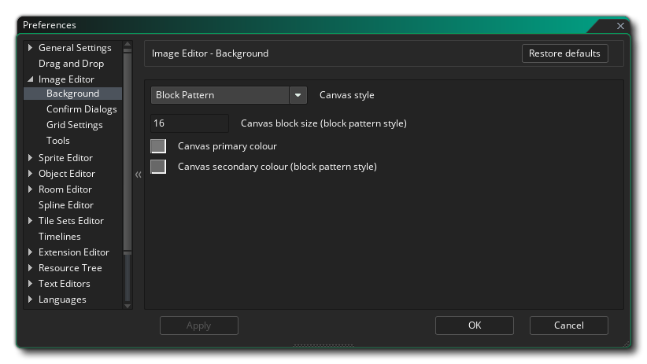
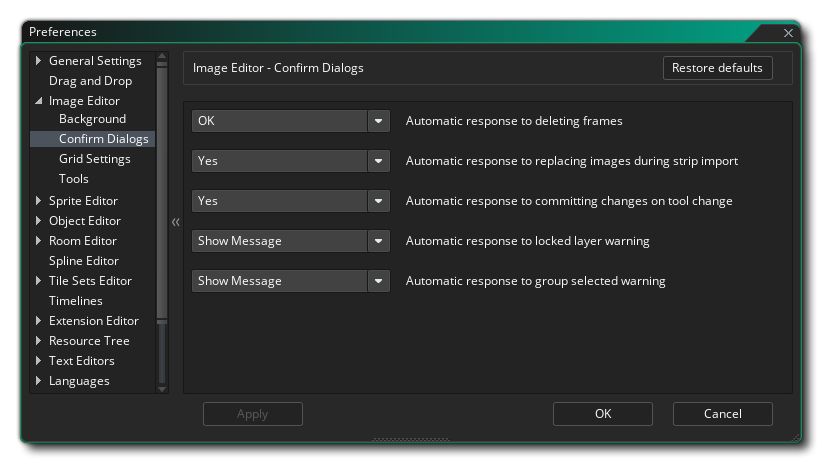
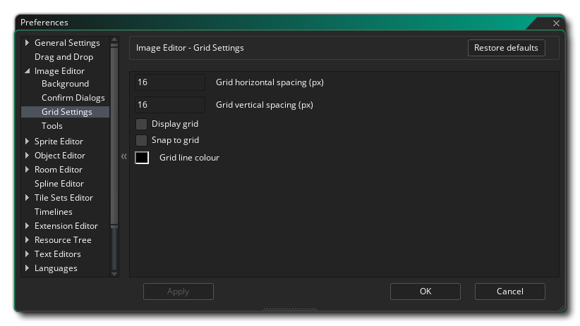

Las Preferencias del Editor de imágenes se usan para definir cómo se ven y se sienten las ventanas del editor de imágenes y sprites. Las siguientes son las opciones generales:
Las Preferencias del Editor de imágenes también tienen las siguientes subcategorías:
- Modo de bucle predeterminado: el botón de bucle en el Editor de imágenes se puede configurar para que funcione en dos modos diferentes: o reproducir una vez, donde la animación se detendrá cuando llegue al último fotograma, bucle desde el inicio, donde la animación volverá a el primer cuadro cuando finaliza, o ping pong, donde la animación irá a través de las imágenes hasta el final y luego volverá a bajar hasta el comienzo. El valor predeterminado aquí es "loop".
- Dibujar contorno de selección fino: si está marcado, el contorno de las selecciones tendrá un ancho absoluto de 1px, independientemente de la escala de la imagen, mientras que desmarcarlo hará que el contorno de selección sea un ancho relativo de 1px y se escale con el imagen. El valor predeterminado es tener esta opción marcada.
- Color primario del esquema de selección: el contorno de la sección es una línea discontinua que alterna entre dos colores. Esta opción le permite configurar el primero de esos colores para usar (incluyendo alfa), y tiene un valor predeterminado de #FFFFFD0.
- Color de contorno secundario de selección: El contorno de sección es una línea discontinua que alterna entre dos colores. Esta opción le permite configurar el segundo de esos colores para usar (incluyendo alfa), y tiene un valor predeterminado de #0000D0.
- Color de fondo del editor: al editar un marco de sprite, la imagen puede escalarse hacia adentro o hacia afuera, o puede no ajustarse a todo el dibujo en la ventana, en cuyo caso se mostrará un color de fondo que puede establecer aquí. El valor predeterminado es #282828FF.
Aquí puede establecer las opciones para el fondo sobre el que edita sus imágenes de sprite. Por defecto, esta es una grilla de cuadrados grises, pero puede usar la siguiente configuración para cambiarla:
- Estilo de lienzo: aquí configura el "estilo" para el fondo, que puede ser " Patrón de bloque " o " Color único ". Un solo color simplemente establece el fondo en el color de su elección (utilizando la configuración de Color 1, como se explica a continuación) mientras que el patrón de bloque es la configuración predeterminada (que también se puede editar usando el resto de las opciones de diálogo que se muestran a continuación). El valor predeterminado es "Patrón de bloque".
- Tamaño de bloque de lienzo: cuando haya seleccionado Patrón de bloque para el fondo, puede establecer el tamaño del bloque individual aquí. El valor predeterminado es 16 px, con un valor mínimo de 2 px y un máximo de 256 px permitido.
- Color primario del lienzo: si elige Color único para el fondo, el color utilizado es este. Puede hacer clic en la muestra de color para abrir el editor de color y modificarlo. Cuando se utiliza la opción Bloquear patrón, establece el primer color para bloques alternativos. El color predeterminado es (rgba) # c3c3c3ff.
- Color secundario de lienzo (estilo de patrón de bloque): si tiene seleccionado Patrón de bloque para el fondo, el color utilizado para alternar con el color 1 (arriba) es este. Puede hacer clic en la muestra de color para abrir el editor de color y modificarlo. El color predeterminado es (rgba) # 808080ff.
Aquí puede seleccionar el comportamiento de los diálogos de confirmación cuando realiza diferentes acciones en el sprite actual. Son:
- Respuesta automática a la eliminación de fotogramas: cuando elimina un fotograma de forma predeterminada, aparece un mensaje que le pregunta si está seguro de que desea hacerlo. Al establecer esta opción en "Aceptar", puede eliminar este mensaje y permitir la eliminación de marcos sin que se muestren más mensajes. El valor predeterminado es "Mostrar mensaje".
- Respuesta automática a la sustitución de imágenes durante la importación de tira: cuando selecciona Importar tira en el menú desplegable Imagen, recibirá un mensaje advirtiéndole que sobrescribirá cualquier imagen que ya esté en el recurso de sprite, con la opción de continuar o no. Puede establecer aquí si desea mostrar este mensaje o hacer que el IDE simplemente elija la opción "Sí" o "No". El valor predeterminado es "Mostrar mensaje".
- Respuesta automática para realizar cambios en el cambio de herramienta: cuando cambia las herramientas de dibujo después de editar un marco, de forma predeterminada aparece un mensaje para preguntar si desea confirmar los cambios realizados. Al establecer esta opción en "Aceptar", puede eliminar este mensaje y permitir que la edición de marcos se confirme sin que se muestren más mensajes cuando cambie las herramientas. Si elige "No", la edición de cuadros se cancelará silenciosamente cuando cambie las herramientas. El valor predeterminado es "Mostrar mensaje".
- Respuesta automática a la advertencia de capa bloqueada: si intenta editar una capa bloqueada, recibirá un mensaje que le informa de manera predeterminada que no puede hacerlo. Si configura esta opción como "OK", no se mostrará ningún mensaje y la edición fallará en silencio.
- Respuesta automática al grupo de advertencia seleccionada: si selecciona varias capas en el editor de capas y luego intenta dibujar o editar, se le mostrará un mensaje por defecto para informarle que no es posible. Puede seleccionar "Aceptar" aquí para eliminar este mensaje y silenciosamente no puede editar las imágenes juntas hasta que solo se seleccione una sola capa. El valor predeterminado es "Mostrar mensaje".
Las preferencias de Configuración de cuadrícula se utilizan para establecer cómo se presentará la cuadrícula de la imagen, con las siguientes opciones disponibles:
- Espaciado horizontal de cuadrícula (px): este valor establece el espaciado para las líneas horizontales de la cuadrícula de la imagen. El valor predeterminado es 1px.
- Espaciado vertical de cuadrícula (px): este valor establece el espaciado para las líneas verticales de la cuadrícula de imágenes. El valor predeterminado es 1px.
- Visualizar cuadrícula: si está marcada, el Editor de imágenes se abrirá con la cuadrícula de imágenes activada. El valor predeterminado es desactivado.
- Ajustar a la cuadrícula: si está marcada, el editor de imágenes ajustará automáticamente ciertas herramientas a la cuadrícula de la imagen. El valor predeterminado es desactivado.
- Color de la línea de cuadrícula: aquí puede establecer el color (incluido el valor alfa) para la cuadrícula de la imagen. El valor predeterminado es #000000FF.
Aquí puede establecer las diferentes opciones de cómo funcionan y se muestran algunas de las herramientas de dibujo.
Si está usando la herramienta Arc
a continuación, aquí puede establecer los diferentes colores utilizados para dibujar las propiedades del nodo:
- Color del punto de anclaje: establezca el color de los diferentes puntos de anclaje en la spline / arco. El valor predeterminado es (rgba) #FF0000FF.
- Color del punto de control: establezca el color para cada uno de los "controles" del punto de control en un punto de anclaje. El valor predeterminado es (rgba) #FF0000FF.
- Color de línea tangente: establezca el color de las líneas que unen los puntos de control con los anclajes. El valor predeterminado es (rgba) #00FFFFFF.
- Color del punto seleccionado: establezca el color que se utilizará para cualquier punto de anclaje seleccionado en la spline / arco. El valor predeterminado es (rgba) #00FF00FF.
- Tamaño de punto: establezca el tamaño de los diferentes puntos de anclaje y puntos de control que se utilizarán. El valor predeterminado es 10 px.